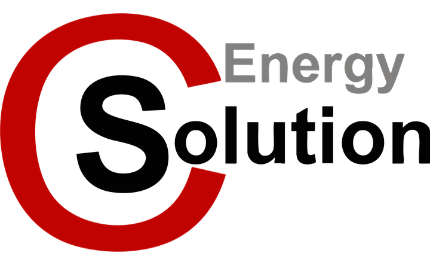

저장 자료 탐색
지적도는 동네 단위로 확대하면 표시됩니다.
현장 찾기
지도·통계 도구
한전 여유용량양수0 MW음수작은 원: 위치만 확인숫자 핀은 동명 한전 용량 · 범위는 원천 값 차이. 작은 원은 철도시설·미대응 시설의 위치입니다. 비율 확보 시 녹색 ≥70% · 주황 40~70% · 적색 <40%.

SCEnergy 태양광 Pathfinder주소를 선택하고 패널을 배치해 보세요.© 2026 SC Energy Solution. All rights reserved.에너지 지도지적도는 동네 단위로 확대하면 표시됩니다.